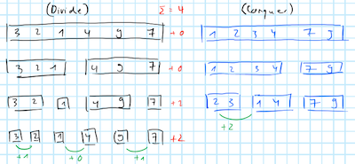

The algorithm we will perform is the powerful mergesort, but in each step of the merging phase we will count the inversions. Taking advantage of the fact that the two arrays \(\mathbf{l}\) and \(\mathbf{r}\) that we are comparing at each step \(k\) are already sorted in non-decreasing order, we have that if \(\mathbf{l}_i > \mathbf{r}_j\) then this implies that \(\mathbf{l}_i > \mathbf{r}_m\) for all \(m > j\).
The pseudo-code of this algorithm will consists of two functions, count_inversions and merge_inversion. The former is the main, recursive function that uses the merge_inversion as a sub-method. To understand the pseudo-code let us consider a simple example of a list: A=[3,1,2,4], which has only one inversion. The count_inversions function will recursively split A into halves until it reaches the \(K\)-th step when \(A_K\) is of length 1. At that point it exits the recursion and simply returns the list \(A_K\) itself and a pseudo-inversion count of \(0\). At all other steps it returns the output from merge_inversion(left,right,inv_left,inv_right) - a list sorted in non-decreasing order and the cumulative count of inversions.
def count_inversions(A):
if len(A) = 1
# In case we are already at final divisions:
return A, 0
else:
# For all other steps k<K:
middle = len(A)/2
intialize left, right
for x in A up to middle:
add x to left
for x in A after middle:
add x to right
left, inv_left = count_inversions(left)
right, inv_right = count_inversions(right)
return merge_inversion(left,right,inv_left,inv_right)The merge_inversion function implements the \(k\)-th step logic: mergesort and counting inversions. The latter works in the same way it always does, it compares two elements left[0] and right[0] and appends the output list combine by the smaller value. How inversions are counted should be straight-forward to see as well: when comparing left[0] and right[0] suppose we have left[0] > right[0], so we have encountered an inversion. Then this implies that since left is already sorted in non-decreasing order the inversion counter should be incremented by the length of left.
def merge_inversion(left,right,inv_left,inv_right):
# Initialize:
combine = []
inversion = 0
# Merge and count inversions:
while len(left) != 0 and len(right)!=0:
if left[0] > right[0]:
add right[0] to combine
add len(left) to inversion
remove right[0] from right
else:
add left[0] to combine
remove left[0] from left
endwhile
# Take care of remaining elements:
while len(left) != 0:
add left[0] to combine
remove left[0] from left
endwhile
while len(right) != 0:
add right[0] to combine
remove right[0] from right
endwhile
# Add them all up:
total_inversion = inversion + inv_left + inv_right
return combine, total_inversionBelow we have sketched a schematic example of how the algorithm works. On the left in black we show the divide phase. Individual rows show the \(K\) steps we need to divide (and then again to conquer). In blue we have sketched the conquer phase. Green annotations show where inversions occure and in red have added a simple iterator that counts the inversions at each step \(k\) and the sum of all of them above.
Note that the bottom row of the divide phase is also our first point of action of the conquer phase. We compare adjacent lists two each other, all of which have just one elements. Sorting them and counting inversions is very simple. We find two inversions - \(3>2\) and \(9>7\) - and for each of them we increment the iterator by \(+1\).
At the next step we have three lists so we just merge the first two. Here we first compare \(2\) - at position \(i=0\) - to \(1\) at position \(m=2\). We find that \(2>1\) so we have encountered an inversion. But this time we increment the iterator by \(m-i=+2\) since \(3\) is also greater than \(1\). Once again we also sort the elements we look at.
It should be straight-forward to see that in the remainder of the divide phase we find no more inversions and that we therefore end up with \(4\) inversions in total.

Case where \(|A| \le 1\):
In this case it is trivial that the algorithm is corrects since we will jump straight to
if len(A) = 1
# In case we are already at final divisions:
return A, 0so the algorithm correctly returns 0.
General case
We will prove by induction. Suppose we are at the \(k\)-th step of the algorithm and assume that in all previous steps the number of inversions have been computed correctly and list \(A_k\) is sorted correctly. At the step \(k\) we then split \(A_k\) into left and right. Then we have already demonstrated above how the merge_inversion will correctly merge left and right and increment the inversion counter. Applying the principle of mathematical induction we conclude that the algorithm is correct.